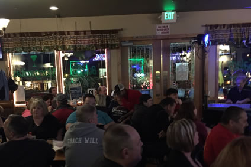
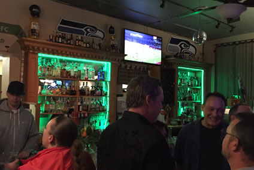
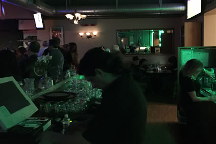
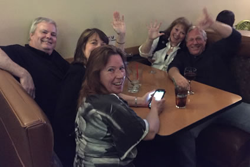
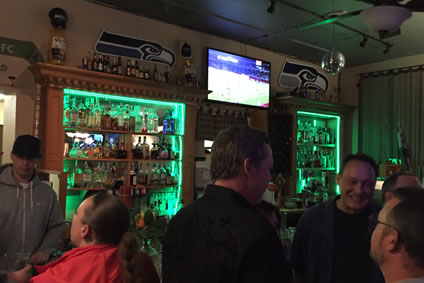
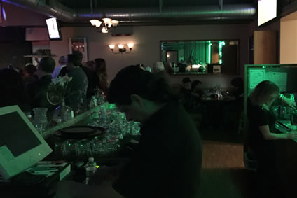
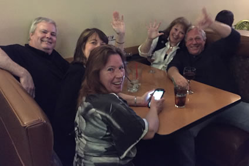
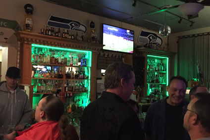
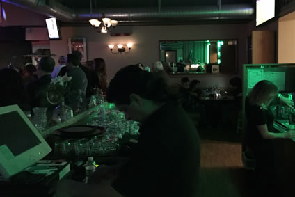
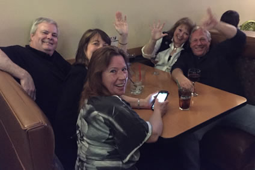

 








Drinks
All drinks at Arturo's are hand crafted with the finest ingredients. We take great pride in our spirits collection, including an excellent selection of high quality tequilas. Our drink menu includes all the classics, such as:
- Margaritas
- Piña Coladas
- Mojitos
- Bloody Mary's
- Martinis